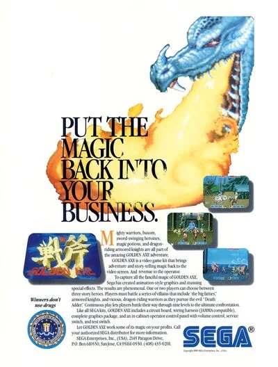

FBA (FinalBurn Alpha)
Golden Axe
- Año: 1989
- Desarrollador: Sega
- Género: Lucha / 2.5D
- Jugadores: 2 jugadores
Beat 'em up de fantasía de Sega: un bárbaro, una amazona y un enano luchan contra el ejército de Death Adder para rescatar al rey y a la princesa de Yuria. Se puede usar magia y montar en dragones y otras bestias.
Controles
Tres botones, todos en la fila de abajo.
| Panel | Juego |
|---|---|
 | Atacar |
 | Saltar |
 | Usar la magia |
  | Empezar |
 | Meter una moneda |
+  | Salir del juego |
El panel en FBA (FinalBurn Alpha)

Argumento
Recopilado de internet (2026-11-02).
En la tierra de fantasía de Yuria, el malvado Death Adder ha capturado al rey y a su hija y los tiene presos en su propio castillo. Además tiene el Hacha Dorada, el emblema mágico de Yuria, y amenaza con destruirla junto a la familia real si el pueblo no lo acepta como soberano.
Tres guerreros salen a rescatar al rey y a vengarse:
- Gilius Thunderhead: un enano con hacha de las minas de Wolud; los soldados de Death Adder mataron a su hermano gemelo.
- Ax Battler: un bárbaro con espada que busca vengar el asesinato de su madre.
- Tyris Flare: una amazona con espada larga; Death Adder mató a sus padres.
Por el camino salvan el Pueblo Tortuga (construido sobre el caparazón de una tortuga gigante, que los lleva por el mar) y vuelan hasta el castillo a lomos de un águila gigante.
Final: en el castillo vencen a Death Adder y salvan la tierra. En la recreativa, el final rompe la cuarta pared: tres niños juegan a Golden Axe en un salón recreativo cerrado, la máquina hace cortocircuito y los personajes del juego salen al «mundo real» y persiguen a los niños, con los tres guerreros detrás para rescatarlos.
Fuentes
Jugabilidad
Recopilado de internet (2026-11-02). Lo marcado con ⚠️ no está probado en la bartop.
- Tipo de juego: beat 'em up de Sega (1989), de los creadores de Altered Beast.
- Magia: cada personaje lanza un hechizo que daña a todos los enemigos de la pantalla: Gilius, rayos; Ax, tierra; Tyris, fuego. La fuerza depende de las barras de magia llenas, y cada uno tiene un máximo distinto.
- Pociones: se consiguen dando patadas a los ladrones azules; los verdes sueltan comida que recupera vida.
- Vida: bloques azules abajo (de 3 a 5); al vaciarse se pierde una vida y se vuelve con la salud llena. Caer por un precipicio cuesta una vida aunque la salud esté llena (y la montura se pierde).
- Los enemigos vencidos no desaparecen: se quedan convertidos en piedra.
- Si te entretienes, salen esbirros sombra muy fuertes.
Monturas (bizarrians)
Se montan al tirar al jinete enemigo o si están libres. Tras unos cuantos golpes, la montura huye.
| Montura | Ataque |
|---|---|
| Cocatriz | Golpe de cola (la más débil) |
| Dragón azul | Chorro de fuego de cerca |
| Dragón rojo | Bolas de fuego de lado a lado de la pantalla; solo hay uno en todo el juego: conviene guardarlo para el final |
Enemigos
- Esbirros: hombres con maza y mujeres con hacha (estas, más peligrosas).
- Esqueletos: salen de la tierra en las fases avanzadas, con cimitarra y escudo.
- Gigantes: con martillo; a veces se ríen antes de pelear, y eso da tiempo para el primer golpe.
- Caballeros gigantes: espada, escudo y armadura; mejor con montura o magia.
- Death Adder: el jefe final, con un hacha enorme y fuego que corre por el suelo. Hacen falta muchas pociones.
Fuentes
Guía de niveles
Recopilado de internet (2026-11-02).
Las fases van del Pueblo Tortuga, sobre una tortuga gigante, al vuelo en águila hasta el castillo de Death Adder.
- El comienzo: un soldado herido cuenta el secuestro; se gana al vencer a los gigantes.
- El Pueblo Tortuga: amazonas montadas en dragones; al final, un esqueleto.
- El poblado: aquí está el único dragón rojo; cuidado con el puente roto. Al final, un caballero blanco sale de una taberna.
- El Camino del Demonio: un cementerio sobre el águila gigante, con esqueletos que salen de las tumbas. De las más difíciles.
- El castillo: Death Adder, con el rey y la princesa encadenados. Al morir, su propia hacha cae sobre él.
- ⚠️ No he encontrado un longplay con las fases marcadas: el de «Vídeos» es la mejor referencia.
Fuentes
Objetos
Recopilado de internet (2026-11-02). Lo marcado con ⚠️ no está probado en la bartop.
| Objeto | Qué hace |
|---|---|
| Pociones de magia (ladrones azules) | Llenan barras de magia. |
| Comida (ladrones verdes) | Recupera vida. |
| Monturas | Cocatriz y otras más potentes; atacan por ti. |
Fuentes
Trucos y secretos
Recopilado de internet (2026-11-02). Lo marcado con ⚠️ no está probado en la bartop.
Secretos
- Fases bonus entre niveles: salen ladrones a los que dar patadas para conseguir pociones y comida.
- El final del salón recreativo: solo en la recreativa.
Fuentes
Longplay

Partida completa de la recreativa (16 min), de AL82 Retrogaming Longplays: Golden Axe Longplay (Arcade) [60 FPS].